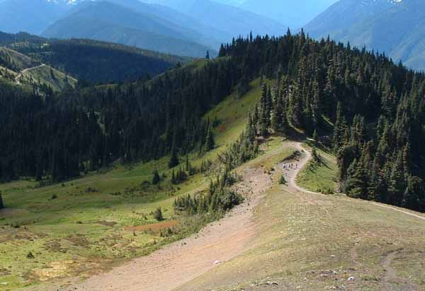

Located in the North West corner of Washington State is the Olympic Mountain Range lies the Olympic National Park. Whether you're a novice or an experienced hiker there's something in the Olympic National Forrest for you. Within the park, there's several miles of hiking trails, camp grounds and amazing scenery to explore.
Hurricane Ridge
Hurricane Ridge is located 18 miles from Port Angeles in the Olympic National Park. Day hiking along with skiing and snowshoeing are some of the other activities most of the year.
Day HikingIts not uncommon to come across several speciecies of wildlife along any of the numerous trails. Don't be surprised to walk around any bend in a trail and stumble upon a black bear or in rare occasions a mountain lion. If you're lucky enough you may even get a few pictures of the wildlife.

Camping
Along most trails theres camping available. Some sites have services such as a port-o-potty and lockers to keep your food secure fom the animals. Be sure to check your map and readthe information prived at the trailhead before your adventure.